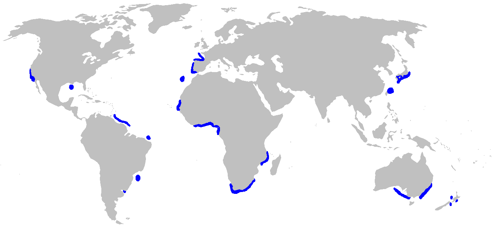
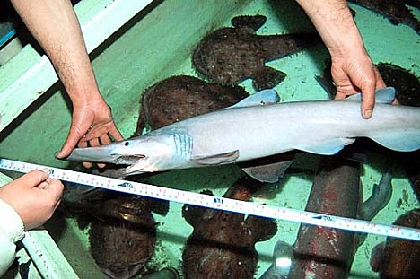

DISTRIBUTION AND HABITAT
The goblin shark has been caught in all three major oceans, indicating a wide global distribution. In the Atlantic Ocean, it has been recorded from the northern Gulf of Mexico, Suriname, French Guiana, and southern Brazil in the west, and France, Portugal, Madeira, and Senegal in the east. It has also been collected from seamounts along the Mid-Atlantic Ridge. In the Indo-Pacific and Oceania, it has been found off South Africa, Mozambique, Japan, Taiwan, Australia and New Zealand. This species has been recorded from off East Cape to Kaikoura Canyon and from the Challenger Plateau near New Zealand. A single eastern Pacific specimen is known,collected off southern California. This species is most often found over the upper continental slope at depths of 270–960 m (890–3,150 ft). It has been caught as deep as 1,300 m (4,300 ft), and a tooth has been found lodged in an undersea cable at a depth of 1,370 m (4,490 ft). Adults inhabit greater depths than juveniles. Immature goblin sharks frequent the submarine canyons off southern Japan at depths of 100–350 m (330–1,150 ft), with individuals occasionally wandering into inshore waters as shallow as 40 m (130 ft).
On 19 April 2014, fishermen in Key West, Florida, while fishing in the Gulf of Mexico, caught a goblin shark in their fishing net, only the second one ever to be caught in the Gulf. The shark was photographed and released back into the water. The first shark found in the Gulf was caught by commercial fisherman on 25 July 2000 at a depth of approximately 919-1,099 m (3,016-3606 ft) and is thought to have been about 20 ft long.
During July 2014, a goblin shark was found in a fishery net in Sri Lanka, near the eastern coast of Sri Lanka. The shark was about 4 ft (1.2 m) long and weighed about 7.5 kg (17 lb). The shark was given to the NARA (National Aquatic Resource Research & Development Agency) for further research.